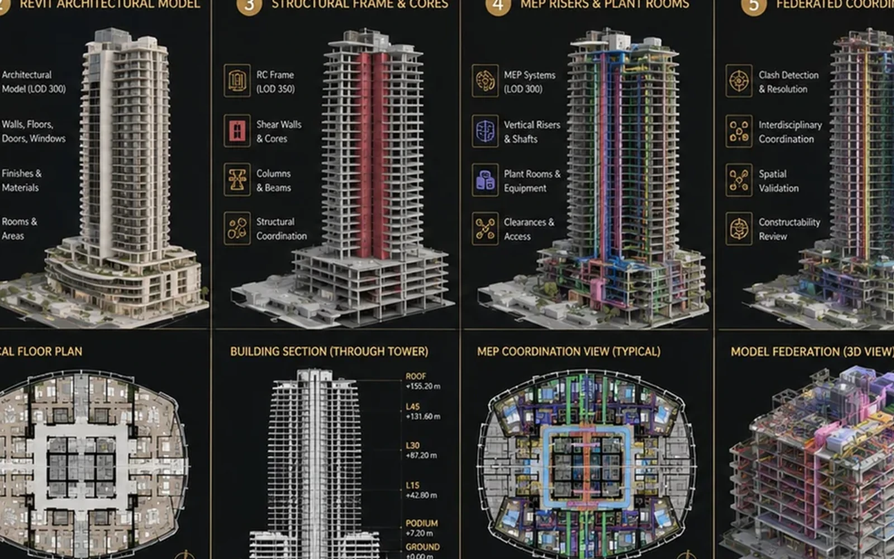

STR
Structure
Grids, spans, openings and architecture-structure interfaces.
Structure, MEP, buildability and digital coordination are developed around the design intent so technical reality strengthens the project instead of eroding it.


Structure, MEP and buildability should be coordinated around one development and architectural intent.
Grids, spans, openings and architecture-structure interfaces.
Plant space, shafts, ducts and equipment interfaces.
Rooms, containment, major routes and coordination zones.
Stacks, drainage, fire systems and routing.
Interfaces, access, sequencing and detail risks.
Federated models, clashes, issue control and coordinated outputs.
Selected BIM project families show where multidisciplinary coordination changes the project.
